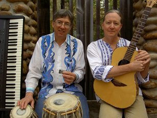
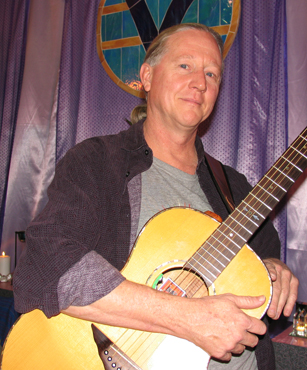

Michael Mandrell

Michael honed his open-tuning guitar chops in the early 80ís on the Texas folk circuit, performing with and opening for many prominent and upcoming artists such as Nancy Griffith, Lyle Lovett and John Gorka to name just a few. Moving to Taos, NM in 1991, Michael performed with the world fusion group Taosî co-producing their CD, The Deepening Edgeî, released nationally on Blix Street Records. His latest self produced CD, "The Great Spiral Dance" continues in the fusion tradition with his original guitar compositions masterfully arranged with flutes of the world, fretless bass, East Indian and mixed percussion, Uillean pipes and other ethnic instruments.
Michael tours regionally and nationally, playing solo as well as with many of the acoustic warrior road tribe, including Jenny Bird, Benjy Wertheimer and Anton Mizerak. As Echoes executive producer Kimberly Hass observes: "Michael's hybrid guitar style reveals a guitarist of eclectic sensibilities and delicate technique. His music circles the globe in imagistic compositions."
For a print-ready jpeg Michael Mandrell click HERE.
{kind=link}

Anton & Michael's Concerts
Mount Shasta keyboardist, harmonica and tabla player Anton Mizerak and Celtic guitarist Michael Mandrell present concerts of acoustic world fusion and Mount Shasta/Celtistani transformational healing music.
Michael Mandrell is know for his transcendent guitar playing. He has been featured on Public Radio International's Echoes with host John Diliberto.
Michael Mandrell's blend of Celtic, Jazz and New Age music demonstrates just what a 6 and 12 string guitar can do in the hands of a real master. Touring with many fine acoustic ensembles as well as solo, Michael has shared the stage with such musical luminaries as Lyle Lovett, Nanci Griffith, Jenny Bird, Spyro Gyra, William Ackerman, and Shadowfax.
Anton Mizerak lives in Mount Shasta and writes his music in nature, believing that our organic experience of sun, wind, water, snow and earth, transmitted through music, can be a valuable nurturing and healing experience. Anton plays keyboards and harmonica. His music has been featured on the nationally syndicated radio show "Echoes" and on Dish Network's and Direct TV's New Age music programming. His CD series "When Angels Dream" has been a top seller with healers and massage therapists. Many people have seen Anton at New Thought Churches, symposiums and retreats, including Asilomar and Unity Village, over the past ten years.
Their concerts feature Michael's amazing guitar playing accompanied by Anton on tabla and harmonica along with Anton's original music and chants from around the world.
For a print-ready jpeg of Anton and Michael click HERE.
{kind=link}
Anton, Laura & Michael's Concerts
Anton Mizerak, Laura Berryhill and Michael Mandrell have been touring New Thought Centers, UU Fellowships and Yoga Studios as a dynamic trio. Their Celtic and world music sound is stellar and their chant set is not to be missed.
